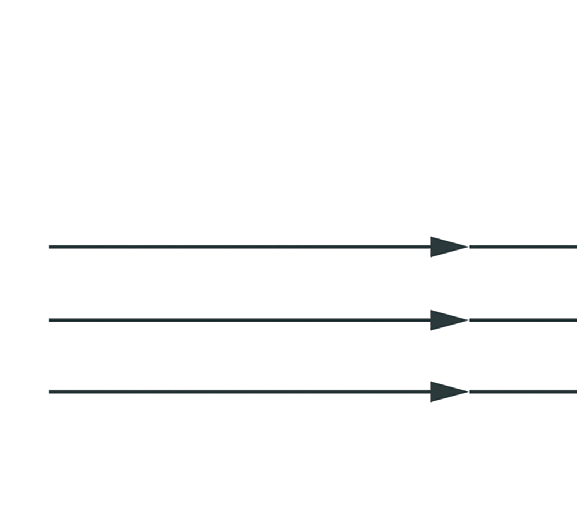
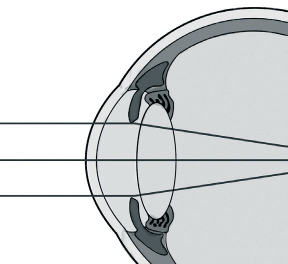
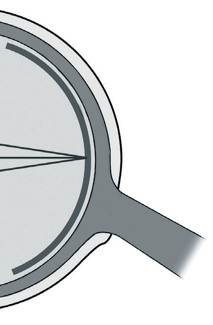
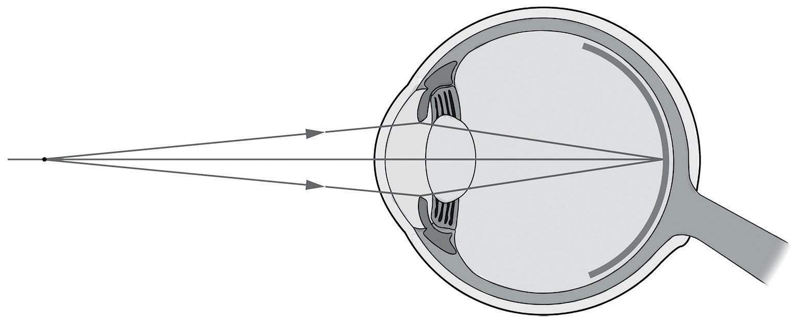

Accommodation of the human eye
For an object to be seen sharply, the image must be formed exactly at the location of the retina. The eye adjusts to different object distances by changing the focal length of its lens. This is because the lens-to-retina distance, corresponding to , does not change. However, this is different from the lens camera in which the focal length is fixed and the lens-to-sensor distance is changed. For the normal eye, a distant object is sharply focused when the ciliary muscles are relaxed. This causes the curvature of the lens to decrease, thereby increasing its focal length (Figure 6.20(a)).
To focus sharply on a closer object, the tension in the ciliary muscle increases, causing the ciliary muscle to contract. This causes the lens to bulge, resulting in the increase of its curvature and decrease of its focal length (Figure 6.20(b)). The process by which the eye focuses on objects at different distances by varying the focal length of the lens is called accommodation.



